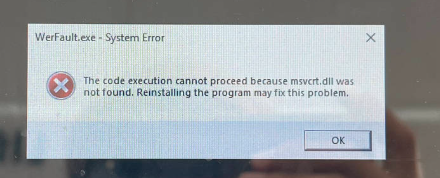
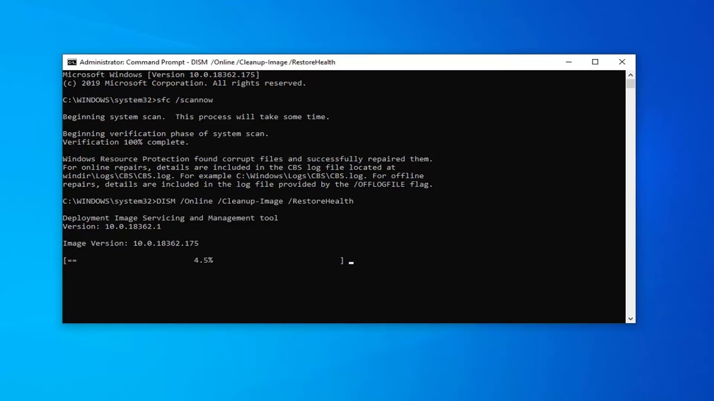
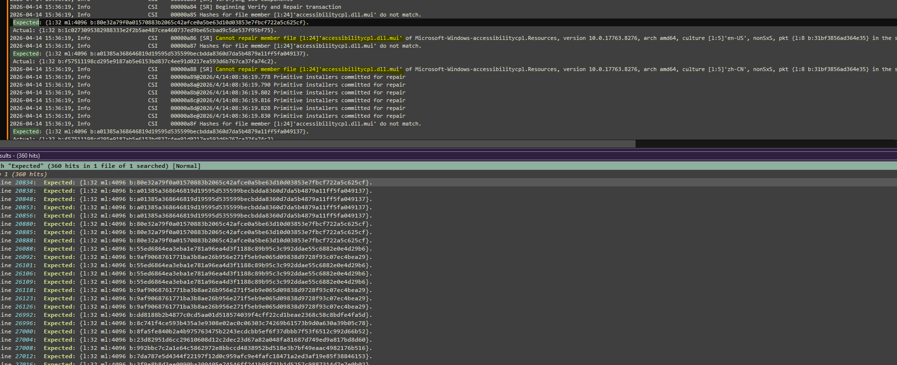
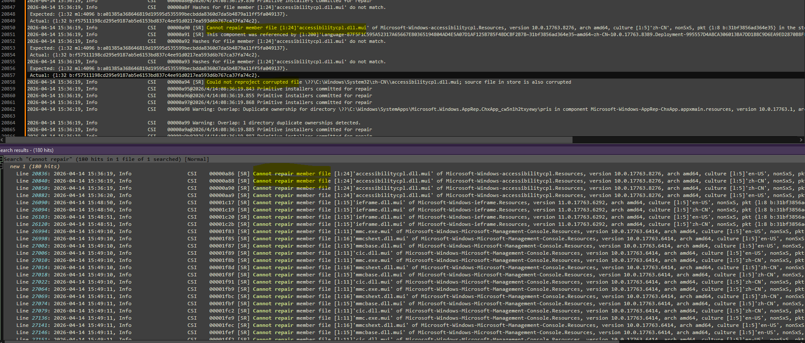
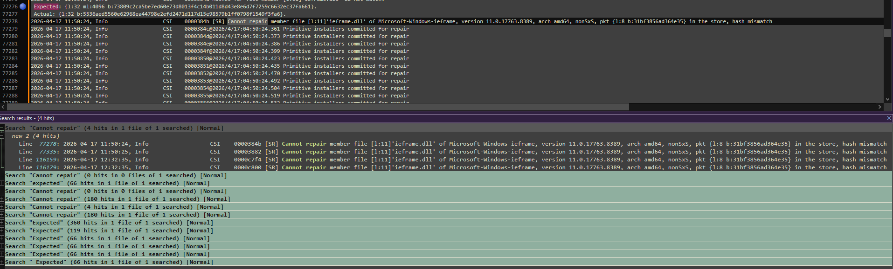
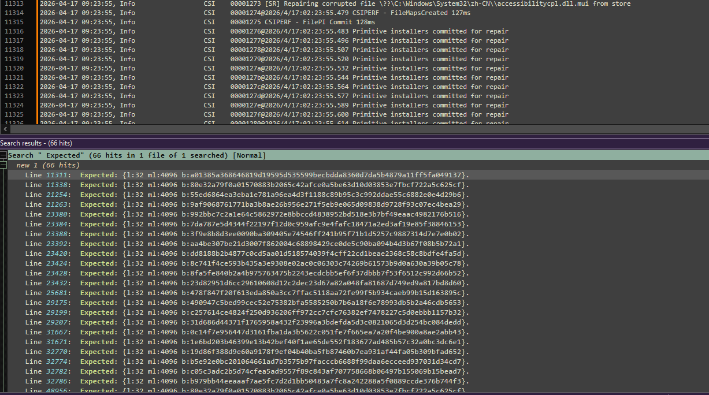
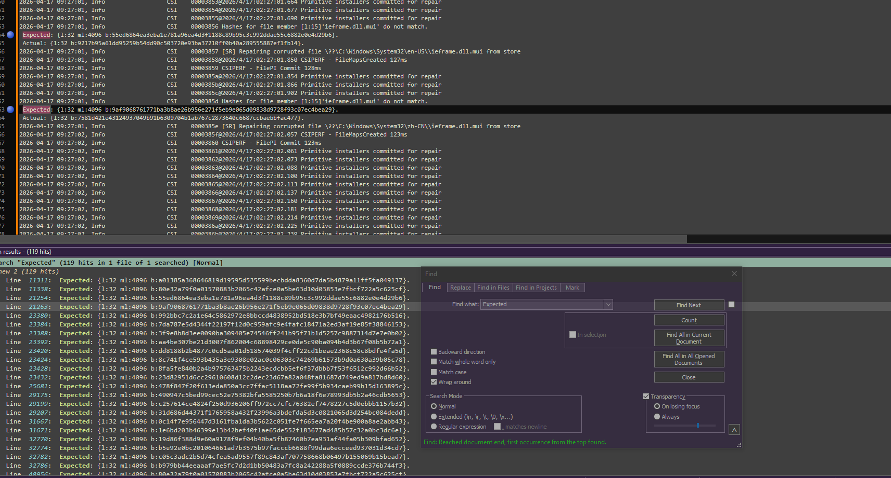

"The code execution cannot proceed because msvcrt.dll was not found. Reinstalling the program may fix this problem."
"The application was unable to start correctly (0xc0000005). Click OK to close the application."

Thật ra khi gặp phải sự cố này lần đầu trên các máy, mình cảm thấy hoang mang và hi vọng rằng các công cụ AI có thể tìm cách để xử lý. Mình đã thử làm các bước cơ bản theo hướng dẫn trên cộng đồng Microsoft, tuy nhiên đều không khả thi. Việc mình lưu tâm nhiều nhất đó là nó luôn đề cập về CBS.log
Trước khi đi vào kiểm tra CBS.log, đã thử các phương pháp truyền thống nhưng không khả thi:
👉 Vì vậy mình quyết định kiểm tra file này đang chỉ điều gì:
Phân tích log chi tiết (CBS.log) để xác định file hệ thống bị lỗi cụ thể

Theo những gì được nêu thì:



Ví dụ với case trên, ta xác định được một vài file dll đang báo lỗi: accessibilitycpl.dll, ieframe.dll, msvcrt.dll.
Mình thử tìm nguồn để tải các file này từ: www.dll-files.com. Tuy nhiên sau khi tải thành công, copy file vào không thể thực hiện.
copy $dll-filenames$ C:\Windows\System32\
Access is denied
takeown /f C:\Windows\System32\$dll-filenames$icacls C:\Windows\System32\$dll-filenames$ /grant administrators:F copy C:\Windows\System32\$dll-filenames$ sfc /scannow
DISM /Online /Cleanup-Image /RestoreHealth
gpupdate /force
shutdown /r /t 5
icacls C:\Windows\System32\$dll-filenames$ /setowner "NT SERVICE\TrustedInstaller" 

Trong trường hợp này, các phương pháp truyền thống không mang lại hiệu quả. Do đó, cần phân tích CBS.log để xác định chính xác file lỗi.
Sau khi xác định được, áp dụng phương pháp take ownership, cấp quyền và thay thế DLL.
Tuy nhiên cần lưu ý: phương pháp này chỉ nên dùng khi không còn cách khác, và mục tiêu là khôi phục tạm thời để backup dữ liệu.